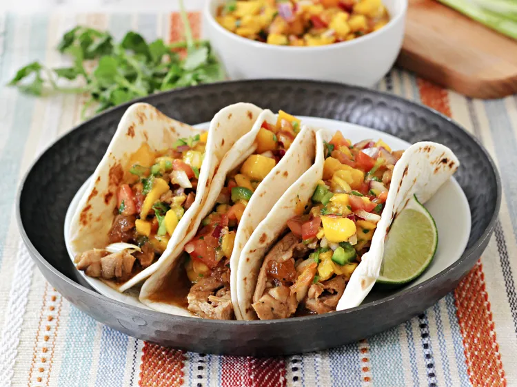

Chicken Adobo Tacos
Home

Description
Delicious chicken adobo served in warm tortillas with fresh toppings.
Ingredients
- 1 lb boneless, skinless chicken thighs
- 1/4 cup soy sauce
- 1/4 cup vinegar
- 4 cloves garlic, minced
- 1 bay leaf
- 1 tsp black peppercorns
- 8 small tortillas
- Chopped cilantro, diced onions, and lime wedges for serving
Steps
- In a large bowl, combine the soy sauce, vinegar, garlic, bay leaf, and peppercorns.
- Add the chicken thighs to the marinade and let sit for at least 30 minutes, or overnight for best results.
- Heat a large skillet over medium-high heat. Remove the chicken from the marinade and cook for about 5-7 minutes on each side, or until fully cooked.
- Remove the chicken from the skillet and let rest for a few minutes before slicing.
- Warm the tortillas in a dry skillet or microwave.
- Assemble the tacos by placing sliced chicken on each tortilla and topping with cilantro, onions, and a squeeze of lime juice.
- Serve immediately and enjoy!